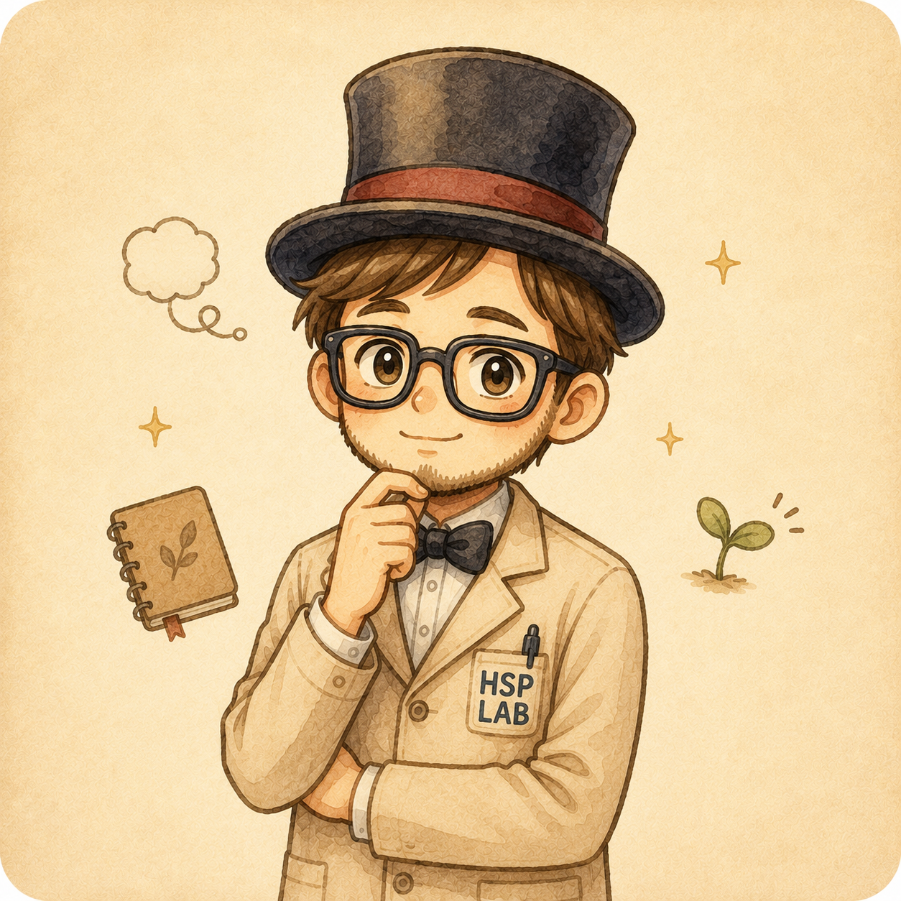
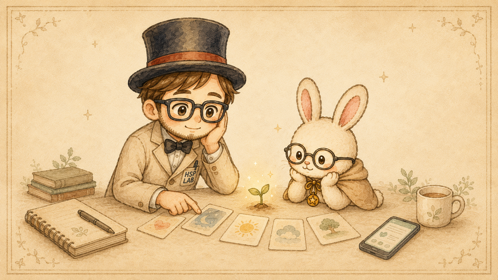
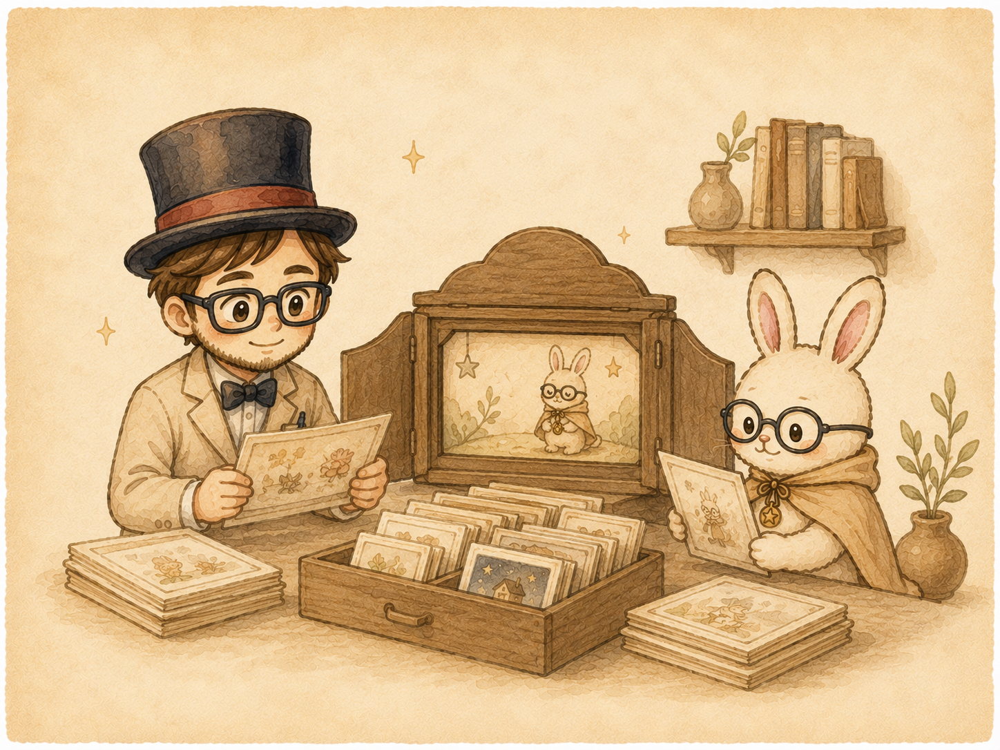
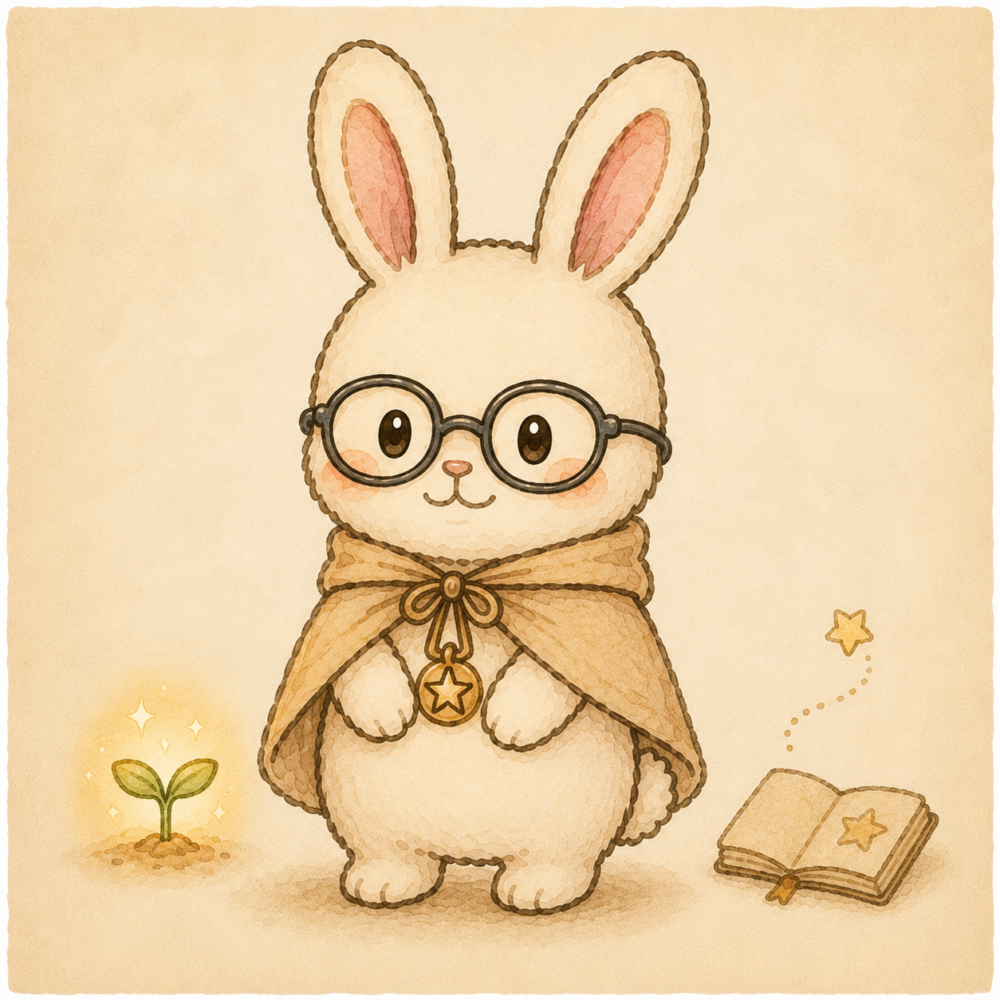
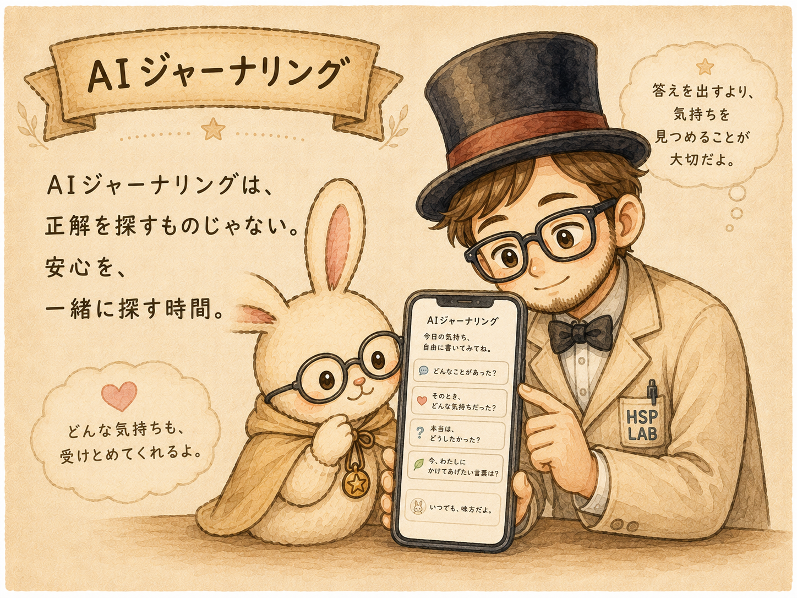

きにしぃ。
HSP当事者・紙芝居の語り手
よく気づき、深く考えすぎてしまう癖があります。 自分を大切にしたいと思いながら、AIジャーナリングを続けています。
HSPの探求がライフワーク。「答えは循環の中にある」と考えています。
- よく気づく
- 考えすぎる
- 自分を大切に
- 答えは循環の中に
小さな紙芝居図書館
Threadsで流れてしまう、
小さな気づきの紙芝居を
ここに残していきます。

AIジャーナリングをしながら見つけた、
心が少し安心できる見方を、
きにしぃ。とスピうさ。が一緒に眺めます。

Threadsの投稿は、
たくさんの言葉の中を流れていきます。
ここは、きにしぃ。とスピうさ。が
AIジャーナリングを通して見つけた気づきを、
紙芝居として残していく場所です。
急いで答えを出すためではなく、
自分の気持ちを少し離れて眺めるために。
必要なときに、
いつでも戻ってこられる場所を目指します。

HSP当事者・紙芝居の語り手
よく気づき、深く考えすぎてしまう癖があります。 自分を大切にしたいと思いながら、AIジャーナリングを続けています。
HSPの探求がライフワーク。「答えは循環の中にある」と考えています。

少し離れた視点の相棒
正解を教える先生ではありません。 少し離れた場所から、やさしい問いをひとつ置いてくれます。
そして、ちょっとスピが好き。
少しずつ、気づきを増やしていきます。

AIジャーナリングは、
AIに正解を決めてもらうためのものではありません。
自分の中にあるモヤモヤを言葉にしながら、
と、自分の内側を一緒に眺める時間です。
AIは先生ではなく、
自分自身の安心を一緒に探す相棒。
このサイトでは、実際のAIジャーナリングから生まれた気づきを、 個人情報を除き、読者も自分を重ねられる紙芝居に変えて残していきます。
私は、答えを持っている人ではありません。
私もHSP当事者です。
克服したわけでも、何でもうまくできるようになったわけでもありません。
今も考えすぎたり、気づきすぎたり、自分の気持ちを置き去りにしてしまうことがあります。
だから、AIジャーナリングを使いながら、自分の心を少しずつ見ています。
先生ではなく、一緒に試している仲間として。
ここにある紙芝居が、あなたが自分の気持ちを眺める小さなきっかけになればうれしいです。